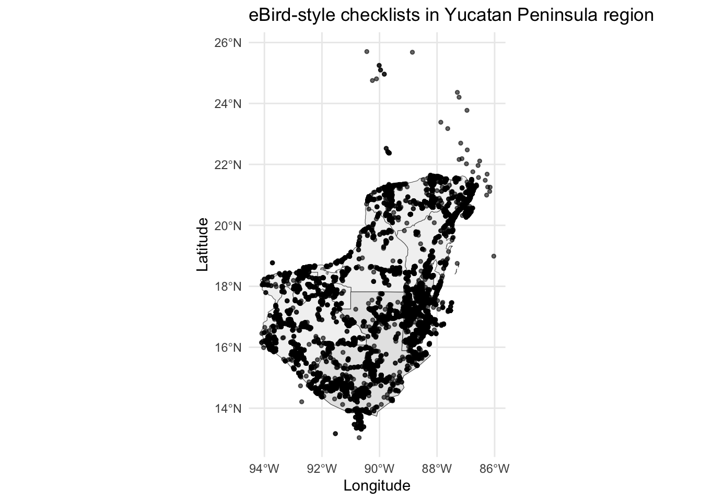
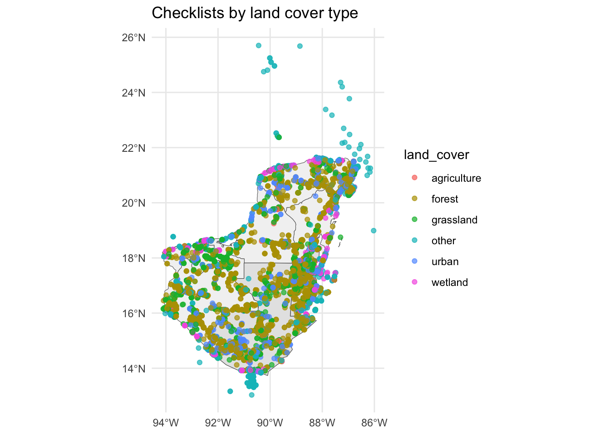
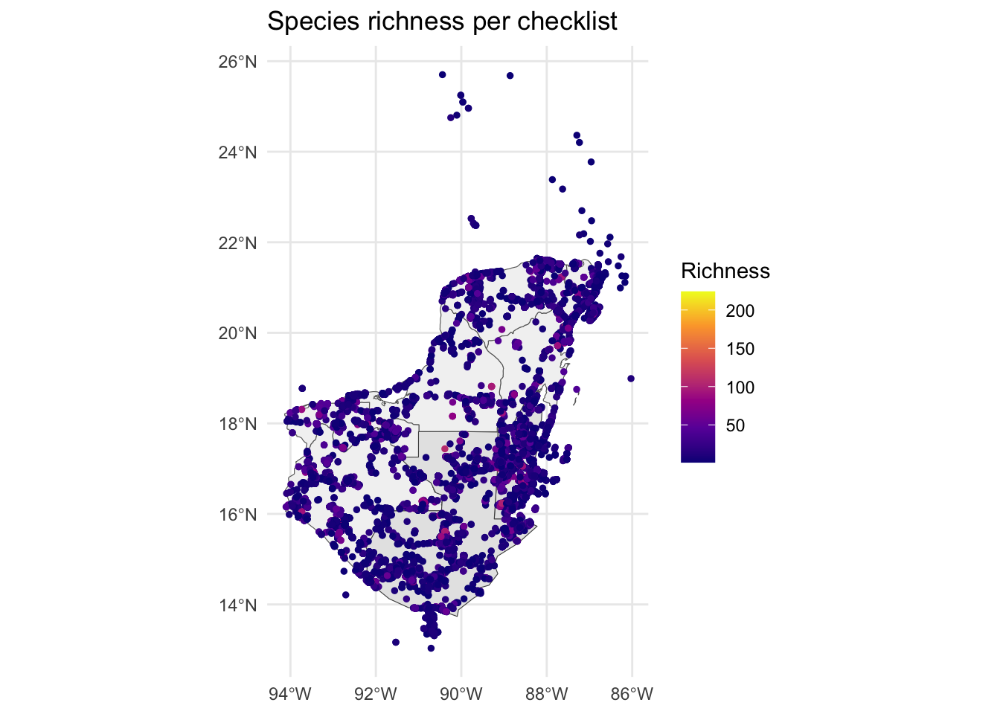
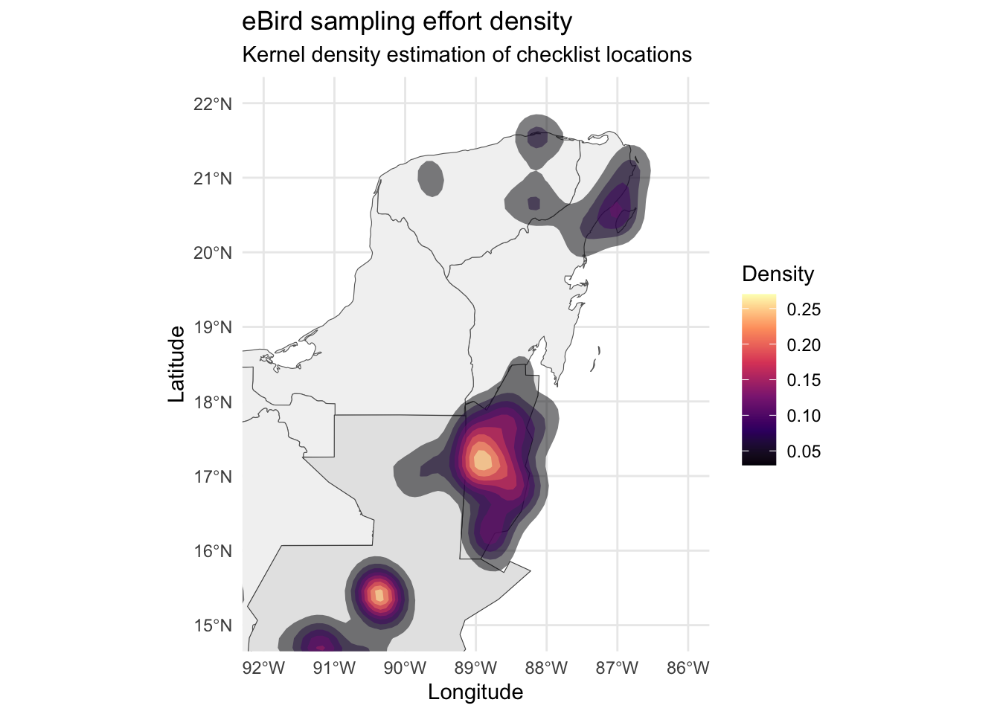
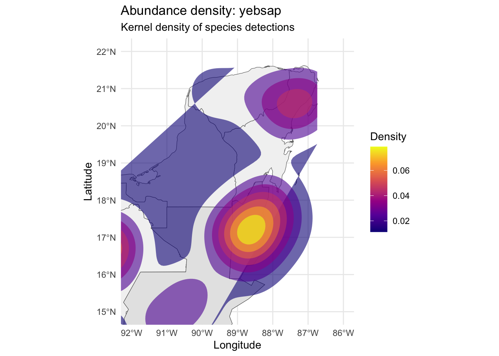
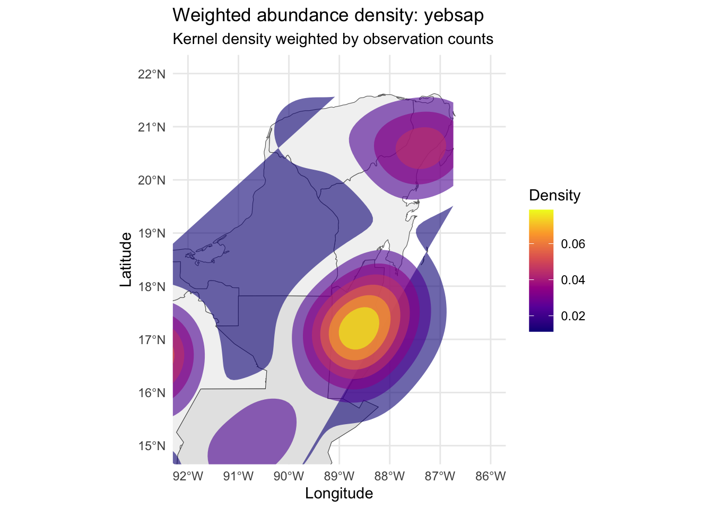
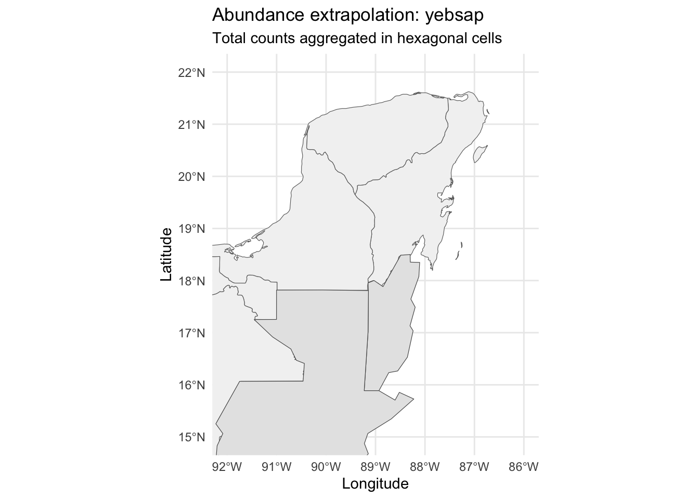
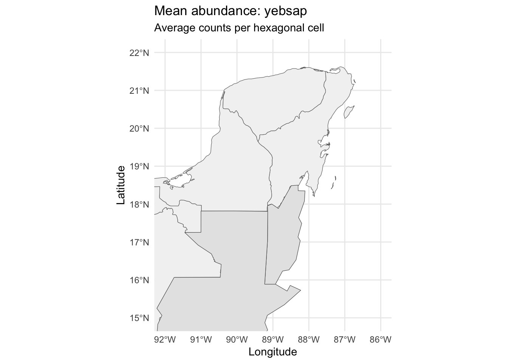
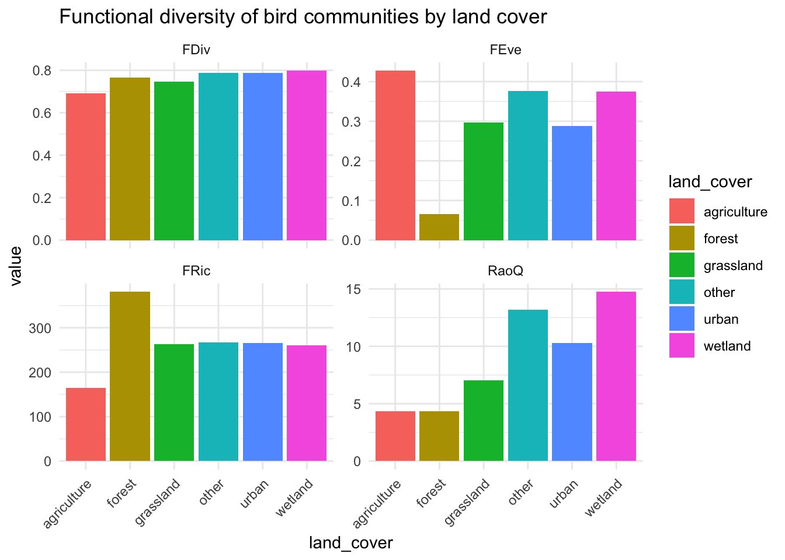
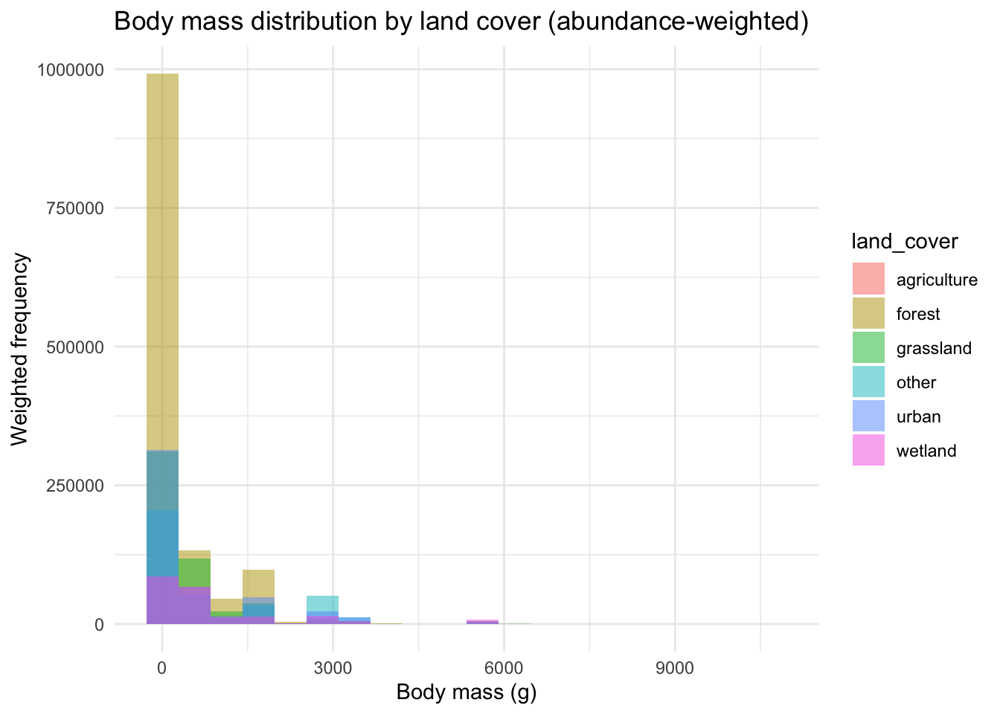

Code
# setwd("path/to/your/folder") # <- adjust and uncomment if necessaryYou will work with three small teaching datasets supplied with this practical:
ebird_yucatan_checklists.csv – checklist-level data (location, date, land cover, effort).ebird_yucatan.csv – species-level detections linked to checklists.ebird_yucatan_traits.csv – simple functional traits for a subset of Yucatan bird species.The workflow is loosely inspired by:
We will not reproduce the papers, but we will borrow their ideas: habitat loss, extinction risk, and functional diversity.
Place all files in the same directory:
ebird_yucatan_practical.qmdebird_yucatan_checklists.csvebird_yucatan.csvebird_yucatan_traits.csvThen set the working directory in R (only if needed):
# setwd("path/to/your/folder") # <- adjust and uncomment if necessaryBefore diving into R, let’s get familiar with the datasets using Microsoft Excel (or LibreOffice Calc, Google Sheets, etc.). Open the three CSV files in your spreadsheet software.
Open ebird_yucatan_checklists.csv in Excel.
Tasks:
Count rows: How many checklists are in the dataset?
Hint: Look at the row numbers or use =COUNTA() function.
Examine columns: What variables are recorded for each checklist?
List at least 5 column names.
Date range: What are the earliest and latest observation dates?
Hint: Sort the date column or use =MIN() and =MAX() functions.
Land cover types: How many different land cover categories are there?
Hint: Use a Pivot Table or filter the land_cover column to see unique values.
Species richness: Create a simple histogram of n_species values.
n_species columnEffort hours: What is the average effort in hours per checklist?
Hint: Use =AVERAGE() on the effort_hours column.
Open ebird_yucatan.csv in Excel.
Tasks:
Total observations: How many species detection records are there?
Species diversity: How many unique species are in the dataset?
Hint: Copy the scientific_name column to a new sheet, then use Remove Duplicates (Data tab).
Most common species: Use a Pivot Table to find the most frequently detected species:
scientific_name in Rowschecklist_ID to Values (Count)Abundance patterns: What is the maximum count recorded for any species in a single checklist?
Hint: Use =MAX() on the count column.
Link to checklists: Pick one checklist_ID value and see how many species were recorded on that checklist.
Hint: Use AutoFilter on the checklist_ID column.
Open ebird_yucatan_traits.csv in Excel.
Tasks:
Trait coverage: How many species have trait data available?
Body mass range: What are the smallest and largest body masses in the dataset?
Hint: Use =MIN() and =MAX() on body_mass_g.
Trophic niches: What different trophic niche categories are present?
Hint: Filter or create a Pivot Table on trophic_niche.
Trait relationships: Create a scatter plot of body_mass_g vs wing_length:
Beak dimensions: Which species has the longest beak (culmen)?
Hint: Sort by beak_length_culmen descending.
Tasks:
VLOOKUP or XLOOKUP, try to match species from the detection file to their traits:
body_mass_g=VLOOKUP(B2, traits!A:B, 2, FALSE)Reflection questions:
We will use only widely available R packages. First - install, manually, the pacman package if needed.
library(pacman)
p_load(
tidyverse, sf, rnaturalearth,
rnaturalearthdata, FD,
ggrepel, textshape
)Now we’ll load the same datasets into R for more sophisticated analysis.
checklists <- read_csv("ebird_yucatan_checklists.csv")Rows: 37912 Columns: 11
── Column specification ────────────────────────────────────────────────────────
Delimiter: ","
chr (3): checklist_ID, observer_ID, land_cover
dbl (7): year, month, latitude, longitude, effort_hours, n_species, land_co...
date (1): date
ℹ Use `spec()` to retrieve the full column specification for this data.
ℹ Specify the column types or set `show_col_types = FALSE` to quiet this message.detections <- read_csv("ebird_yucatan.csv")Rows: 727110 Columns: 5
── Column specification ────────────────────────────────────────────────────────
Delimiter: ","
chr (4): checklist_ID, species_code, scientific_name, common_name
dbl (1): count
ℹ Use `spec()` to retrieve the full column specification for this data.
ℹ Specify the column types or set `show_col_types = FALSE` to quiet this message.traits <- read_csv("ebird_yucatan_traits.csv")Rows: 728 Columns: 8
── Column specification ────────────────────────────────────────────────────────
Delimiter: ","
chr (3): species_code, scientific_name, trophic_niche
dbl (5): body_mass_g, beak_length_culmen, beak_length_nares, beak_width, win...
ℹ Use `spec()` to retrieve the full column specification for this data.
ℹ Specify the column types or set `show_col_types = FALSE` to quiet this message.glimpse(checklists)Rows: 37,912
Columns: 11
$ checklist_ID <chr> "S16159516", "S16160400", "S16160982", "S16164120", "S…
$ date <date> 2014-01-01, 2014-01-01, 2014-01-01, 2014-01-01, 2014-…
$ year <dbl> 2014, 2014, 2014, 2014, 2014, 2014, 2014, 2014, 2014, …
$ month <dbl> 1, 1, 1, 1, 1, 1, 1, 1, 1, 1, 1, 1, 1, 1, 1, 1, 1, 1, …
$ latitude <dbl> 16.09476, 20.98580, 20.08957, 21.33032, 18.98941, 14.3…
$ longitude <dbl> -88.83536, -87.21359, -89.54980, -86.92383, -86.02844,…
$ effort_hours <dbl> 9.6666667, 3.0000000, 0.4666667, 1.5000000, 0.5000000,…
$ observer_ID <chr> "obsr246930", "obsr411187", "obsr174363", "obsr411187"…
$ n_species <dbl> 41, 83, 12, 15, 11, 8, 18, 14, 33, 1, 13, 5, 66, 32, 5…
$ land_cover_code <dbl> 10, 30, 10, 10, NA, 10, 10, 10, 10, 10, 30, 50, 10, 10…
$ land_cover <chr> "forest", "grassland", "forest", "forest", "other", "f…glimpse(detections)Rows: 727,110
Columns: 5
$ checklist_ID <chr> "S17908640", "S16466102", "S17697809", "S17110903", "S…
$ species_code <chr> "paltyr2", "ameavo", "blarob1", "oliwoo1", "brnpel", "…
$ scientific_name <chr> "Zimmerius vilissimus", "Recurvirostra americana", "Tu…
$ common_name <chr> "Guatemalan Tyrannulet", "American Avocet", "Black Thr…
$ count <dbl> 4, 210, 1, 1, 30, 2, 50, 6, 1, 1, 2, 4, 3, 10, 1, 1, 4…glimpse(traits)Rows: 728
Columns: 8
$ species_code <chr> NA, NA, "shshaw", "blchaw1", "zothaw", "shthaw", "r…
$ scientific_name <chr> "Accipiter bicolor", "Accipiter cooperii", "Accipit…
$ body_mass_g <dbl> 287.5, 429.7, 130.6, 766.1, 745.9, 496.0, 1101.2, 5…
$ beak_length_culmen <dbl> 25.0, 25.4, 18.3, 40.8, 35.1, 31.1, 37.6, 34.1, 28.…
$ beak_length_nares <dbl> 13.7, 13.9, 10.1, 27.1, 21.1, 17.0, 22.9, 20.9, 17.…
$ beak_width <dbl> 8.6, 8.6, 7.3, 12.5, 12.7, 10.4, 14.4, 11.4, 11.1, …
$ wing_length <dbl> 229.6, 241.2, 181.6, 393.5, 398.0, 307.6, 402.8, 26…
$ trophic_niche <chr> "Vertivore", "Vertivore", "Vertivore", "Aquatic pre…Task 0.1 (students)
In this part, we will:
# get Yucatan Peninsula + surrounding regions boundaries
mx_states <- rnaturalearth::ne_states(country = "Mexico", returnclass = "sf") |>
filter(name %in% c("Yucatán", "Campeche", "Quintana Roo", "Tabasco", "Chiapas"))
belize <- rnaturalearth::ne_countries(country = "Belize", returnclass = "sf")
guatemala <- rnaturalearth::ne_countries(country = "Guatemala", returnclass = "sf")
checklists_sf <- checklists |>
st_as_sf(coords = c("longitude","latitude"), crs = 4326)
ggplot() +
geom_sf(data = mx_states, fill = "grey95", color = "grey40") +
geom_sf(data = belize, fill = "grey90", color = "grey30") +
geom_sf(data = guatemala, fill = "grey90", color = "grey30") +
geom_sf(data = checklists_sf, alpha = 0.6, size = 1) +
coord_sf() +
theme_minimal() +
labs(title = "eBird-style checklists in Yucatan Peninsula region",
x = "Longitude", y = "Latitude")
Task 1.1
ggplot() +
geom_sf(data = mx_states, fill = "grey95", color = "grey40") +
geom_sf(data = belize, fill = "grey90", color = "grey30") +
geom_sf(data = guatemala, fill = "grey90", color = "grey30") +
geom_sf(data = checklists_sf, aes(color = land_cover), alpha = 0.7) +
theme_minimal() +
labs(title = "Checklists by land cover type")
The checklist data already include n_species (number of distinct species recorded). We can visualise how richness varies spatially.
ggplot() +
geom_sf(data = mx_states, fill = "grey95", color = "grey40") +
geom_sf(data = belize, fill = "grey90", color = "grey30") +
geom_sf(data = guatemala, fill = "grey90", color = "grey30") +
geom_sf(data = checklists_sf, aes(color = n_species), size = 1) +
scale_color_viridis_c(option = "plasma") +
theme_minimal() +
labs(title = "Species richness per checklist",
color = "Richness")
Task 1.2
checklists |>
group_by(land_cover) |>
summarise(mean_richness = mean(n_species),
sd_richness = sd(n_species),
n_checklists = n())# A tibble: 6 × 4
land_cover mean_richness sd_richness n_checklists
<chr> <dbl> <dbl> <int>
1 agriculture 12.9 11.6 172
2 forest 20.3 22.3 22271
3 grassland 19.7 20.4 5996
4 other 16.2 15.7 2107
5 urban 15.2 15.7 6007
6 wetland 21.8 20.4 1359To better understand spatial patterns in eBird data, we can create density maps using kernel density estimation. This is useful for:
We will use the ggplot2::stat_density_2d() function to create smooth density surfaces.
# Create a bounding box for the region
region_bbox <- st_bbox(c(xmin = -92, xmax = -86, ymin = 15, ymax = 22), crs = 4326)
ggplot() +
geom_sf(data = mx_states, fill = "grey95", color = "grey40") +
geom_sf(data = belize, fill = "grey90", color = "grey30") +
geom_sf(data = guatemala, fill = "grey90", color = "grey30") +
stat_density_2d(data = checklists,
aes(x = longitude, y = latitude, fill = after_stat(level)),
geom = "polygon", alpha = 0.5, bins = 10) +
scale_fill_viridis_c(option = "magma") +
coord_sf(xlim = c(-92, -86), ylim = c(15, 22)) +
theme_minimal() +
labs(title = "eBird sampling effort density",
subtitle = "Kernel density estimation of checklist locations",
fill = "Density",
x = "Longitude", y = "Latitude")
Now let’s map the spatial density of a particular species. We’ll select a common species and map where it’s most frequently detected.
# Choose a common species (adjust species_code as needed)
focal_species <- "yebsap" # Yellow-bellied Sapsucker as example
# Get detections with location data
species_detections <- detections |>
filter(species_code == focal_species) |>
left_join(checklists |> select(checklist_ID, longitude, latitude),
by = "checklist_ID")
# Plot species abundance density
ggplot() +
geom_sf(data = mx_states, fill = "grey95", color = "grey40") +
geom_sf(data = belize, fill = "grey90", color = "grey30") +
geom_sf(data = guatemala, fill = "grey90", color = "grey30") +
stat_density_2d(data = species_detections,
aes(x = longitude, y = latitude, fill = after_stat(level)),
geom = "polygon", alpha = 0.6, bins = 8) +
scale_fill_viridis_c(option = "plasma") +
coord_sf(xlim = c(-92, -86), ylim = c(15, 22)) +
theme_minimal() +
labs(title = paste("Abundance density:", focal_species),
subtitle = "Kernel density of species detections",
fill = "Density",
x = "Longitude", y = "Latitude")
We can also weight the density by actual counts, giving more emphasis to locations where the species was seen in higher numbers.
ggplot() +
geom_sf(data = mx_states, fill = "grey95", color = "grey40") +
geom_sf(data = belize, fill = "grey90", color = "grey30") +
geom_sf(data = guatemala, fill = "grey90", color = "grey30") +
stat_density_2d(data = species_detections,
aes(x = longitude, y = latitude,
fill = after_stat(level), weight = count),
geom = "polygon", alpha = 0.6, bins = 8) +
scale_fill_viridis_c(option = "plasma") +
coord_sf(xlim = c(-92, -86), ylim = c(15, 22)) +
theme_minimal() +
labs(title = paste("Weighted abundance density:", focal_species),
subtitle = "Kernel density weighted by observation counts",
fill = "Density",
x = "Longitude", y = "Latitude")Warning in stat_density_2d(data = species_detections, aes(x = longitude, :
Ignoring unknown aesthetics: weightWarning: The following aesthetics were dropped during statistical transformation:
weight.
ℹ This can happen when ggplot fails to infer the correct grouping structure in
the data.
ℹ Did you forget to specify a `group` aesthetic or to convert a numerical
variable into a factor?
Hexagonal bins provide an alternative way to visualize spatial patterns and can be used to extrapolate species abundance across the region. This approach aggregates observations into hexagonal cells, which provides a smooth representation while being computationally efficient.
# Hexbin map of sampling effort
ggplot() +
geom_sf(data = mx_states, fill = "grey95", color = "grey40") +
geom_sf(data = belize, fill = "grey90", color = "grey30") +
geom_sf(data = guatemala, fill = "grey90", color = "grey30") +
geom_hex(data = checklists,
aes(x = longitude, y = latitude),
bins = 30, alpha = 0.7) +
scale_fill_viridis_c(option = "magma", trans = "log10") +
coord_sf(xlim = c(-92, -86), ylim = c(15, 22)) +
theme_minimal() +
labs(title = "Sampling effort: hexagonal binning",
subtitle = "Number of checklists per hexagonal cell",
fill = "Checklists\n(log scale)",
x = "Longitude", y = "Latitude")Warning: Computation failed in `stat_binhex()`.
Caused by error in `compute_group()`:
! The package "hexbin" is required for `stat_bin_hex()`.# Hexbin map of species abundance
ggplot() +
geom_sf(data = mx_states, fill = "grey95", color = "grey40") +
geom_sf(data = belize, fill = "grey90", color = "grey30") +
geom_sf(data = guatemala, fill = "grey90", color = "grey30") +
geom_hex(data = species_detections,
aes(x = longitude, y = latitude),
bins = 25, alpha = 0.7) +
scale_fill_viridis_c(option = "plasma", name = "Detections") +
coord_sf(xlim = c(-92, -86), ylim = c(15, 22)) +
theme_minimal() +
labs(title = paste("Species distribution:", focal_species),
subtitle = "Hexagonal binning of detection locations",
x = "Longitude", y = "Latitude")Warning: Computation failed in `stat_binhex()`.
Caused by error in `compute_group()`:
! The package "hexbin" is required for `stat_bin_hex()`.# Hexbin map weighted by abundance (sum of counts per cell)
ggplot() +
geom_sf(data = mx_states, fill = "grey95", color = "grey40") +
geom_sf(data = belize, fill = "grey90", color = "grey30") +
geom_sf(data = guatemala, fill = "grey90", color = "grey30") +
stat_summary_hex(data = species_detections,
aes(x = longitude, y = latitude, z = count),
fun = sum, bins = 25, alpha = 0.7) +
scale_fill_viridis_c(option = "plasma", name = "Total\ncount") +
coord_sf(xlim = c(-92, -86), ylim = c(15, 22)) +
theme_minimal() +
labs(title = paste("Abundance extrapolation:", focal_species),
subtitle = "Total counts aggregated in hexagonal cells",
x = "Longitude", y = "Latitude")Warning: Computation failed in `stat_summary_hex()`.
Caused by error in `compute_group()`:
! The package "hexbin" is required for `stat_summary_hex()`.
# Mean abundance per hexagonal cell
ggplot() +
geom_sf(data = mx_states, fill = "grey95", color = "grey40") +
geom_sf(data = belize, fill = "grey90", color = "grey30") +
geom_sf(data = guatemala, fill = "grey90", color = "grey30") +
stat_summary_hex(data = species_detections,
aes(x = longitude, y = latitude, z = count),
fun = mean, bins = 25, alpha = 0.7) +
scale_fill_viridis_c(option = "plasma", name = "Mean\ncount") +
coord_sf(xlim = c(-92, -86), ylim = c(15, 22)) +
theme_minimal() +
labs(title = paste("Mean abundance:", focal_species),
subtitle = "Average counts per hexagonal cell",
x = "Longitude", y = "Latitude")Warning: Computation failed in `stat_summary_hex()`.
Caused by error in `compute_group()`:
! The package "hexbin" is required for `stat_summary_hex()`.
Task 1.3
Inspired by conservation concerns in the papers, we can examine reporting rates of two species through time in this teaching dataset.
Reporting rate = proportion of complete checklists on which the species was recorded.
# total number of checklists per year
total_per_year <- checklists |>
count(year, name = "n_checklists")
# detections per species-year (presence on a checklist)
species_year <- detections |>
distinct(checklist_ID, species_code) |>
left_join(checklists |> select(checklist_ID, year), by = "checklist_ID") |>
count(species_code, year, name = "n_checklists_with_species") |>
left_join(total_per_year, by = "year") |>
mutate(reporting_rate = n_checklists_with_species / n_checklists)
head(species_year)# A tibble: 6 × 5
species_code year n_checklists_with_species n_checklists reporting_rate
<chr> <dbl> <int> <int> <dbl>
1 acafly 2014 25 15788 0.00158
2 acafly 2015 31 22124 0.00140
3 acowoo 2014 675 15788 0.0428
4 acowoo 2015 887 22124 0.0401
5 agaher1 2014 43 15788 0.00272
6 agaher1 2015 78 22124 0.00353# Select some species of interest
species_year |>
filter(species_code %in% c("yebsap","plapar")) |>
left_join(traits |> select(species_code, scientific_name), by = "species_code") |>
ggplot(aes(x = year, y = reporting_rate, color = scientific_name)) +
geom_line(size = 1) +
geom_point() +
theme_minimal() +
labs(title = "Reporting rate trends for two focal species",
y = "Reporting rate (proportion of checklists)",
x = "Year",
color = "Species")Warning: Using `size` aesthetic for lines was deprecated in ggplot2 3.4.0.
ℹ Please use `linewidth` instead.
Task 2.1
We want to know whether land cover types differ in their species composition.
# join detections to checklist land cover
det_with_hab <- detections |>
left_join(checklists |> select(checklist_ID, land_cover), by = "checklist_ID")
species_habitat <- det_with_hab |>
group_by(land_cover, scientific_name) |>
summarise(n_checklists = n_distinct(checklist_ID),
total_count = sum(count), .groups = "drop")
species_habitat# A tibble: 3,841 × 4
land_cover scientific_name n_checklists total_count
<chr> <chr> <int> <dbl>
1 agriculture Accipiter striatus 2 2
2 agriculture Actitis macularius 10 35
3 agriculture Agelaius phoeniceus 7 149
4 agriculture Aimophila rufescens 7 8
5 agriculture Amazilia candida 1 4
6 agriculture Amazilia cyanocephala 6 8
7 agriculture Amazilia rutila 2 4
8 agriculture Amazilia tzacatl 7 13
9 agriculture Amazona albifrons 4 11
10 agriculture Amazona autumnalis 11 36
# ℹ 3,831 more rowsspecies_habitat |>
group_by(land_cover) |>
slice_max(order_by = n_checklists, n = 5) |>
arrange(land_cover, desc(n_checklists))# A tibble: 30 × 4
# Groups: land_cover [6]
land_cover scientific_name n_checklists total_count
<chr> <chr> <int> <dbl>
1 agriculture Cathartes aura 60 383
2 agriculture Sporophila morelleti 46 270
3 agriculture Coragyps atratus 42 521
4 agriculture Quiscalus mexicanus 41 438
5 agriculture Dives dives 34 107
6 forest Myiozetetes similis 6400 19010
7 forest Dives dives 6204 21467
8 forest Turdus grayi 6060 18410
9 forest Melanerpes aurifrons 5998 12106
10 forest Coragyps atratus 5804 38600
# ℹ 20 more rowsTask 3.1
Now we bring in functional traits to approximate ideas from Matthews et al. (functional diversity and non-random loss of traits).
We will:
We will use numeric traits:
# species present in traits data
species_present <- traits |>
distinct(scientific_name) |>
pull()
traits_num <- traits |>
filter(scientific_name %in% species_present) |>
arrange(scientific_name) |>
column_to_rownames("scientific_name") |>
select(body_mass_g, beak_length_culmen, wing_length, beak_width)
head(traits_num) body_mass_g beak_length_culmen wing_length beak_width
Abeillia abeillei 2.7 13.0 47.0 1.2
Accipiter bicolor 287.5 25.0 229.6 8.6
Accipiter cooperii 429.7 25.4 241.2 8.6
Accipiter striatus 130.6 18.3 181.6 7.3
Acrocephalus scirpaceus 12.3 18.2 65.3 3.2
Actitis macularius 40.4 25.7 100.4 2.7FD::dbFD() expects species abundances (or presence–absence) per site. Here, we treat land cover types as sites and use total_count as abundance.
abund_habitat <- species_habitat |>
filter(scientific_name %in% species_present) |>
arrange(scientific_name) |>
select(land_cover, scientific_name, total_count) |>
pivot_wider(names_from = scientific_name, values_from = total_count, values_fill = 0) |>
column_to_rownames("land_cover")
abund_habitat[, 1:7] Abeillia abeillei Accipiter bicolor Accipiter cooperii
forest 764 65 61
grassland 16 5 18
urban 3 1 14
wetland 0 3 0
other 0 0 1
agriculture 0 0 0
Accipiter striatus Acrocephalus scirpaceus Actitis macularius
forest 188 0 2090
grassland 48 0 1206
urban 37 0 1038
wetland 0 1 992
other 0 0 1167
agriculture 2 0 35
Aegolius ridgwayi
forest 21
grassland 4
urban 0
wetland 0
other 0
agriculture 0We will calculate:
fd_res <- dbFD(traits_num, abund_habitat, calc.FRic = TRUE, calc.FDiv = TRUE,
calc.FGR = FALSE, m = "max", messages = FALSE)
fd_indices <- tibble(
land_cover = rownames(abund_habitat),
FRic = fd_res$FRic,
FEve = fd_res$FEve,
FDiv = fd_res$FDiv,
RaoQ = fd_res$RaoQ
)
fd_indices# A tibble: 6 × 5
land_cover FRic FEve FDiv RaoQ
<chr> <dbl> <dbl> <dbl> <dbl>
1 forest 381. 0.0649 0.766 4.32
2 grassland 263. 0.298 0.745 7.01
3 urban 266. 0.289 0.787 10.3
4 wetland 260. 0.374 0.797 14.7
5 other 267. 0.377 0.788 13.2
6 agriculture 164. 0.427 0.691 4.36fd_indices_long <- fd_indices |>
pivot_longer(cols = -land_cover, names_to = "index", values_to = "value")
ggplot(fd_indices_long, aes(x = land_cover, y = value, fill = land_cover)) +
geom_col() +
facet_wrap(~ index, scales = "free_y") +
theme_minimal() +
theme(axis.text.x = element_text(angle = 45, hjust = 1)) +
labs(title = "Functional diversity of bird communities by land cover")
Task 4.1
We can also look directly at traits of species that dominate each land cover type.
traits_long <- det_with_hab |>
group_by(land_cover, scientific_name) |>
summarise(total_count = sum(count), .groups = "drop") |>
left_join(traits, by = "scientific_name")
ggplot(traits_long, aes(x = body_mass_g, weight = total_count, fill = land_cover)) +
geom_histogram(alpha = 0.5, bins = 20, position = "identity") +
theme_minimal() +
labs(title = "Body mass distribution by land cover (abundance-weighted)",
x = "Body mass (g)", y = "Weighted frequency")Warning: Removed 527 rows containing non-finite outside the scale range
(`stat_bin()`).
Task 5.1
A similar plot can be made for wing or beak length. Try modifying the code above.
For a more visual representation of the trait space, we can perform a simple PCA.
traits_scaled <- scale(traits_num)
pca <- prcomp(traits_scaled)
pca_scores <- as_tibble(pca$x, rownames = "scientific_name") |>
left_join(traits |> select(scientific_name, trophic_niche), by = "scientific_name")
ggplot(pca_scores, aes(x = PC1, y = PC2, label = scientific_name,
color = trophic_niche)) +
geom_point(size = 2) +
ggrepel::geom_text_repel(size = 3, max.overlaps = 20) +
theme_minimal() +
labs(title = "Trait space of Yucatan Peninsula birds (teaching dataset)",
subtitle = "PC1/PC2 of body mass, beak length, wing length, beak width")Warning: ggrepel: 714 unlabeled data points (too many overlaps). Consider
increasing max.overlaps
Task 6.1 (optional)
summary(pca)).You have completed the core practical. Feel free to extend the analyses, for example by: